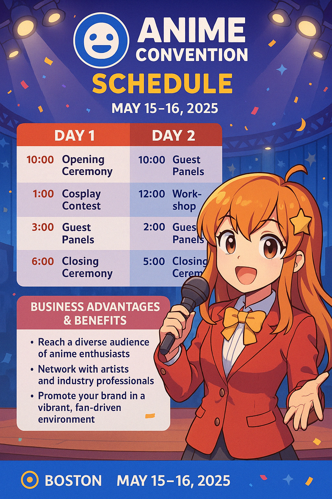

📅 Day 1 — May 15, 2025
- 10:00 AM: Opening Ceremony
- 11:30 AM: Cosplay Contest - Preliminary Round
- 1:00 PM: Panel: “Anime & Culture” with Guest Artists
- 3:00 PM: Manga Drawing Workshop
- 5:00 PM: Live J-Pop Performance
📅 Day 2 — May 16, 2025
- 10:00 AM: Artist Alley Opens
- 11:30 AM: Cosplay Contest - Final Round
- 2:00 PM: Voice Acting Q&A Panel
- 3:30 PM: Fan Art Exhibition
- 5:00 PM: Closing Ceremony